AC Circuits and AC Capacitors
// Alternating current · Sine waves · RMS · The AC power source · Capacitive reactance
After this section you will be able to …
- Explain the principles of operation of alternating current.
- Explain ac voltage and current sine waves, and related concepts such as frequency, period, peak value, and rms value.
- Operate a component of the AC/DC Training System: the ac power source.
- Measure parameters in ac circuits.
- Explain the principles of operation of ac capacitors.
Direct Current vs Alternating Current
In the DC Circuit Fundamentals course you saw that a dc power source drives current in a single direction, conventionally from the positive (high-voltage) terminal to the negative (low-voltage) terminal.
An ac power source is different. The voltage at its terminals continuously changes polarity, alternating between positive and negative, so the current in the circuit continuously switches direction.
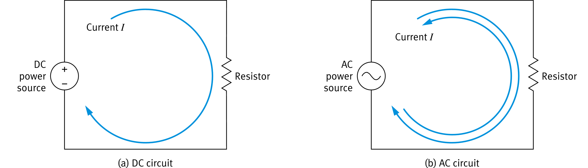
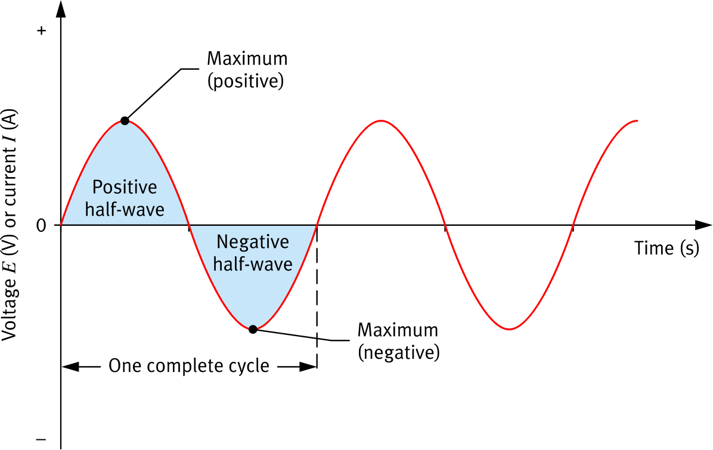
The Sine Wave
Voltage and current in an ac circuit are both represented by a sine wave plotted against time.
- The value continuously changes with time, ranging from a positive maximum to a negative maximum.
- The part above the axis is the positive half-wave; the part below is the negative half-wave.
- One complete cycle is a positive half-wave followed by a negative half-wave.
- Because the current sine wave changes polarity, the direction of current flow in the circuit changes with it.
Frequency f and Period T
Frequency is the number of complete cycles per second, measured in hertz (Hz) after Heinrich Hertz. A higher frequency means more cycles per second and a steeper curve.
Period is the time length of one cycle, measured in seconds (s). Frequency and period are reciprocals of each other.
| Power network | Frequency | Period of one cycle |
|---|---|---|
| North America | 60 Hz | 1 / 60 Hz = 16.7 ms |
| Europe, Asia, Africa, Australia | 50 Hz | 1 / 50 Hz = 20 ms |
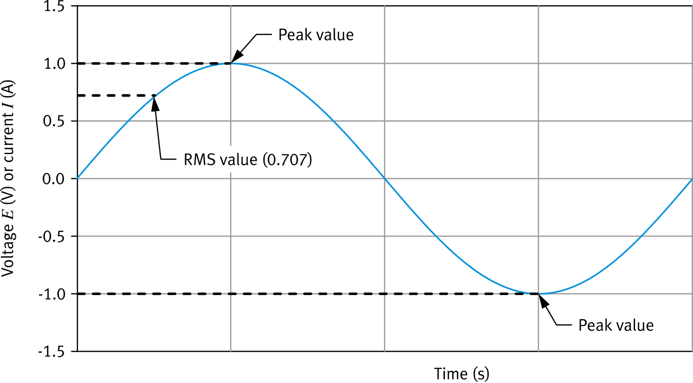
Two Constant Values for a Changing Wave
A dc voltage or current has a single constant magnitude. An ac voltage or current changes continuously, so it is described by two constant values instead.
- The peak value is the maximum the wave reaches, positive or negative.
- The rms value (root-mean-square) is the effective value: the constant magnitude that would deliver the same effect.
Dividing by √2 is the same as multiplying by about 0.707.
RMS Is the DC Equivalent
Connect a 24 V dc source to a resistor, then connect an ac source to an identical resistor. To make the ac source deliver the same power, adjust it until its rms voltage equals 24 V.
- The dc source voltage lines up with the rms value of the ac source.
- The ac source still swings to a higher peak value: 24 V × √2 ≈ 33.9 V.
- The same relationship holds for the currents in the two circuits.
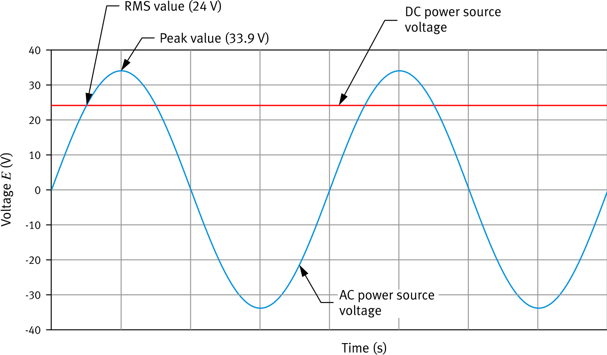
The AC Power Source
- Turn it on by setting the training system Power Input switch to I; turn it off by setting the switch to O.
- A circuit breaker protects the source. If the current exceeds the 1 A rating for too long, the breaker opens the circuit.
- Reset the breaker with the button beside the source, but only after finding and correcting the cause of the overcurrent.
circuit diagram symbol
Measuring Voltage and Current in AC Circuits
The instruments and connections are the same as in dc circuits. The one change: probe polarity does not matter, because ac voltage and current have no fixed positive or negative side.
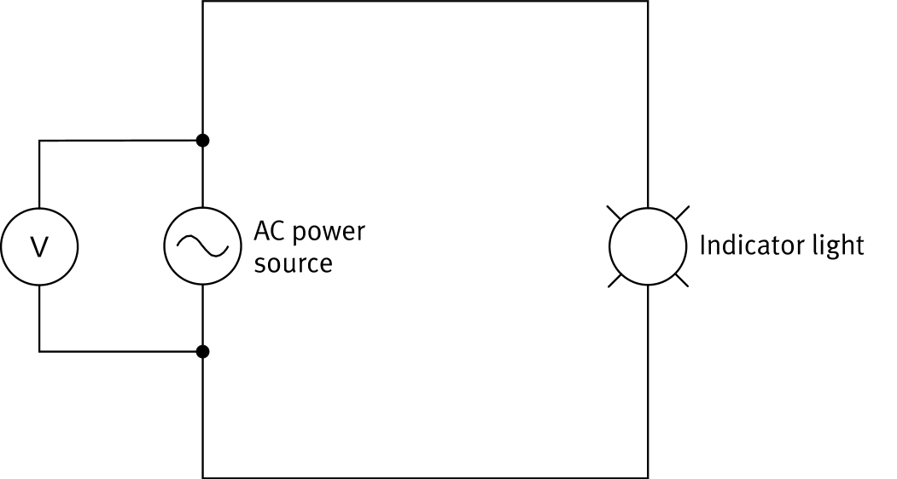
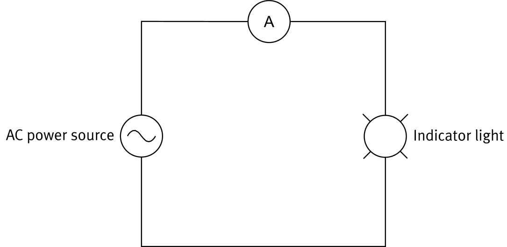
Measuring Resistance and Capacitance
These measurements need the power source removed from the circuit, so whether the source was ac or dc makes no difference. The method is exactly the same as in dc circuits.

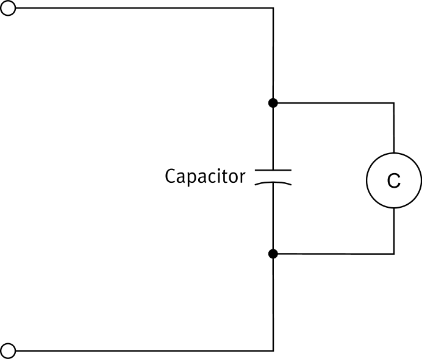
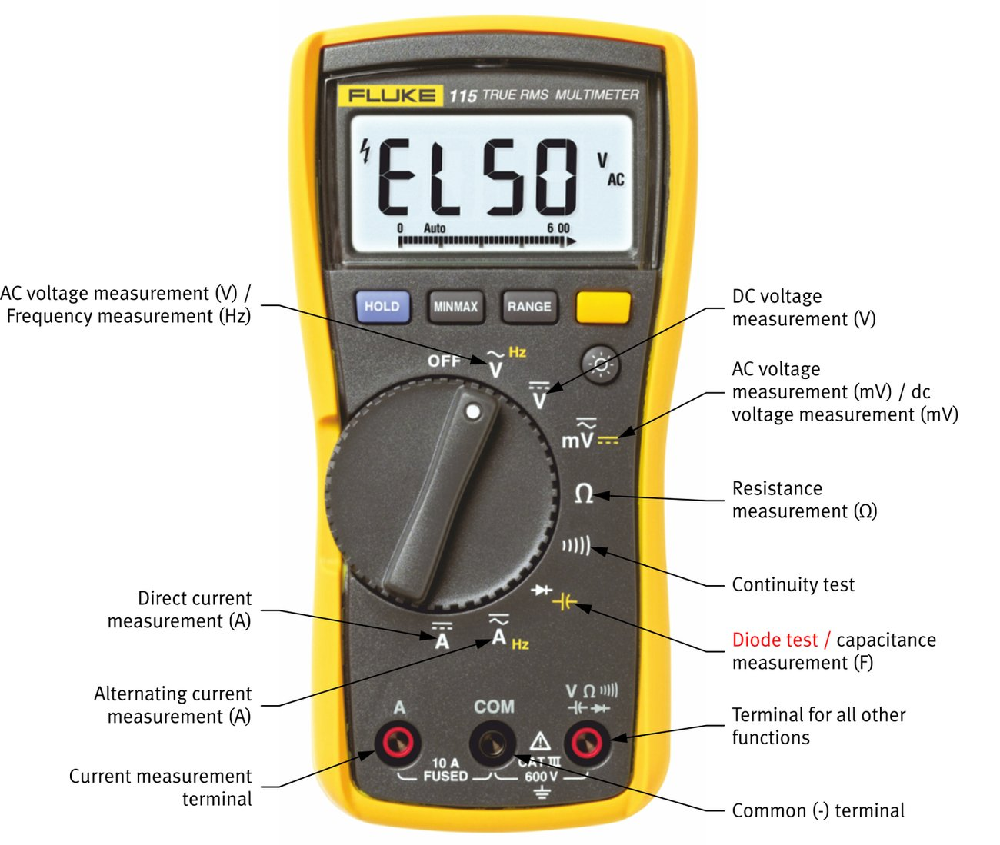
Measuring Both Current Types
A multimeter combines several instruments in one body. Most also measure ac: just select the matching function on the dial.
The letter A or V on the dial carries a small symbol showing whether that position measures dc or ac.
solid line over dashes
sine-wave mark
AC Capacitors Are Built the Same Way
Like a dc capacitor, an ac capacitor is two conducting materials separated by an insulating dielectric, and its main rating is capacitance in farads (F).
What differs is the operation. Alternating current makes the capacitor behave very differently from how it does on dc, which is the focus of the rest of this exercise.
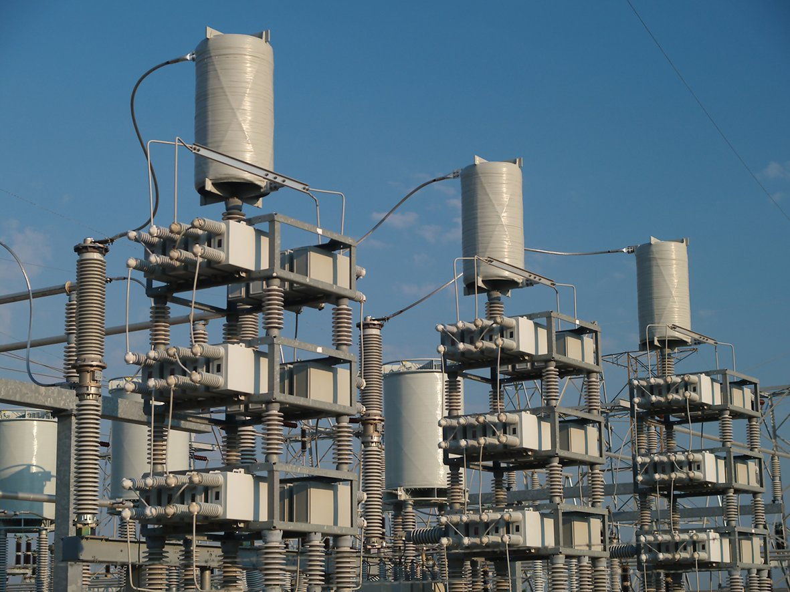
Recap: A Capacitor on DC
On a dc source, charge accumulates until the capacitor voltage equals the source voltage. At that point the capacitor is fully charged and current stops flowing.
- Fully discharged: the polar molecules in the dielectric sit in random orientations and the plates carry no net charge.
- Fully charged: positive charge collects on the plate wired to the positive terminal, negative charge on the other, and the dielectric molecules line up with the field.
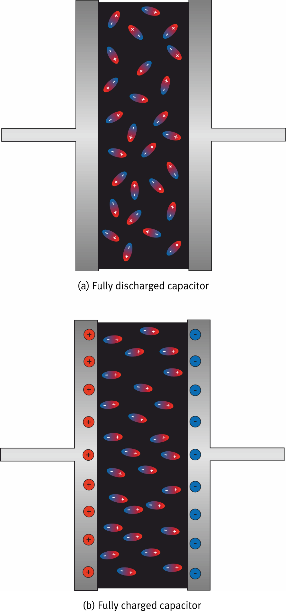
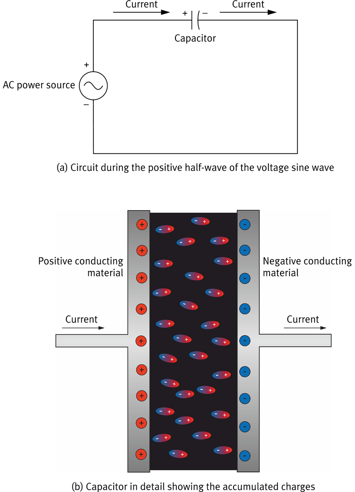
The Capacitor Charges One Way
Then Everything Reverses
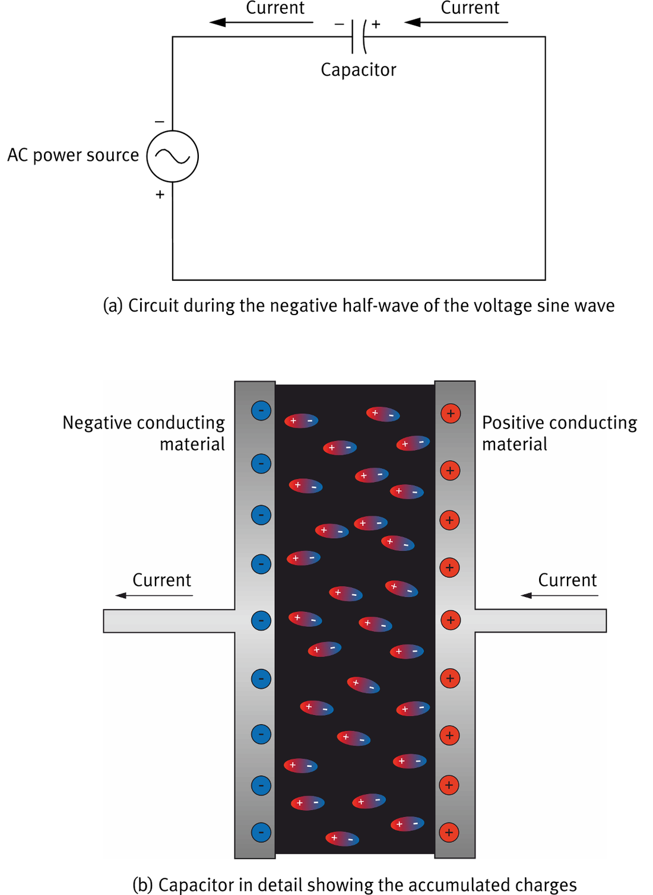
Capacitive Reactance XC
An ac capacitor never stays fully charged, so it does not block current. It does, however, oppose current flow, just as a resistor does.
That opposition is called capacitive reactance, measured in ohms (Ω). It depends on the capacitance and on the source frequency.
C in farads (F)
XC in ohms (Ω)
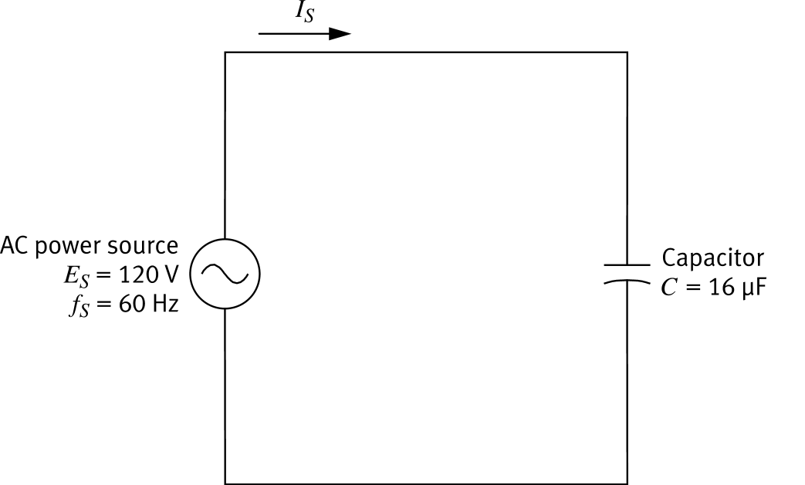
120 V, 60 Hz, 16 µF
Combining Capacitors: Same Rules as DC
Equivalent capacitance is found exactly as for dc capacitors. You can then convert the equivalent capacitance to an equivalent reactance, or combine the individual reactances directly. Reactances combine like resistances.
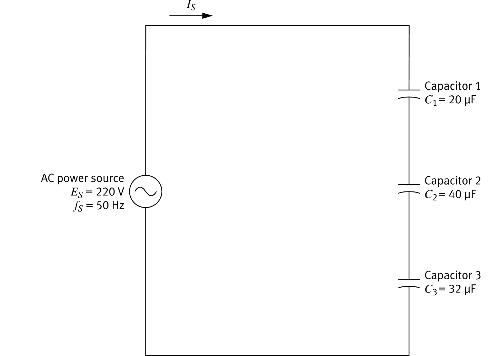